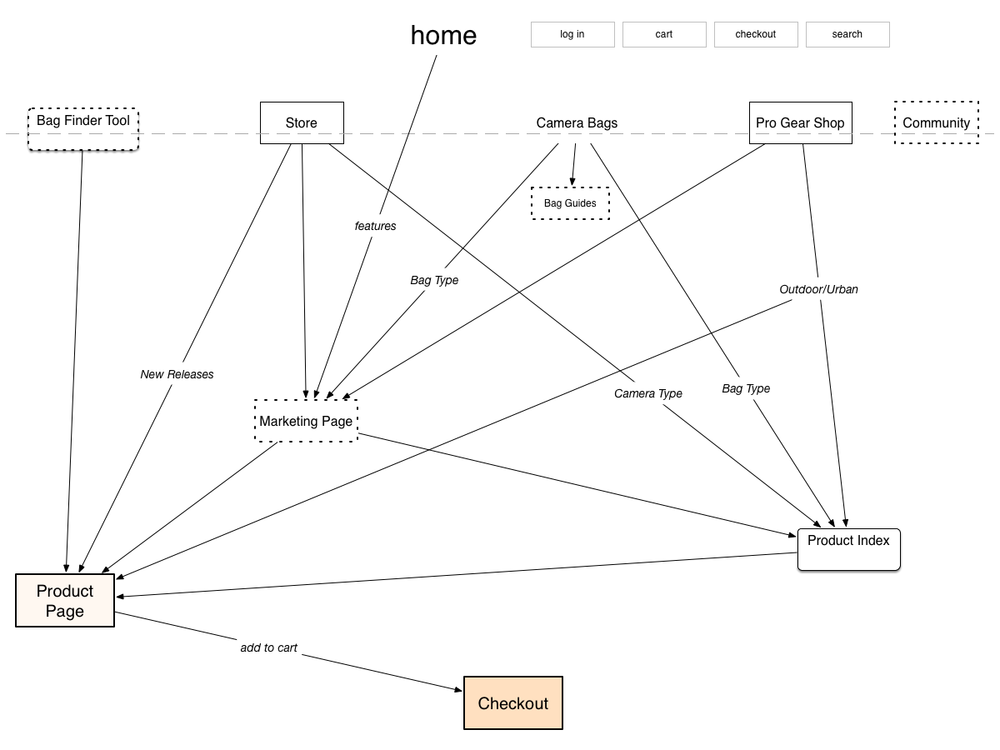

LOWEPRO
Responsive mobile design and information architecture redesign concept
Project Summary:
Lowepro is one of the largest manufacturers of camera bags in the world. They came to us because they wanted to increase their conversion rates, particularly on mobile devices. We identified what the most critical design changes were to help them meet this goal within their constraints. We redefined their information architecture and developed a responsive design concept for their E-commerce site which was used as a basis for their new site.
View Mobile Prototype View Desktop PrototypeRole:
This was a collaborative effort between Gordon Cohen and myself. I did competitive research and a critical review of the existing site as well as identified user needs, prioritized features, developed information architecture, navigation schema and user flows, made and tested prototypes. Created as a 2 week project at General Assembly’s UXDi.
Challenges:
- cater to personas with widely varying levels of expertise
- work within constraints of existing E-commerce platform and localization issues
- provide experience reflective of brand values and consistent across platforms
Evaluation & Testing of Existing Website:
Lowepro didn't have any clear directives of what changes they wanted other than wanting to increase conversion. They knew it was a problem that their site wasn't optimized for mobile devices and changes needed to be made to remedy that but wanted our opinion on the site overall as well. We looked at their analytics and saw that most of their visitors on mobile devices were coming in on product pages, likely from a google search or ad link, but were leaving almost immediately. Visitors on desktops were similarly likely to get to the site from an external link and while they stayed longer than mobile users they might stay and browse the site a little longer but they weren't staying long enough to discover other products.
With these insights from analytics we went through the site to get to know it. The site has the complexity of having a separate Magento e-commerce site for different localities and a set of marketing pages that are the same internationally. The navigation was set up in a way that there were inconsistencies in how to get to marketing product pages or e-commerce product pages. We tested with users and found that these inconsistencies led to confusion and frustration because they felt like they were sometimes being taken to a page they weren't expecting. Also, the navigation was in mega menus that the users we talked to found unwieldy. With these insights, we proposed having a single product page for each item instead of an e-commerce page and a marketing page.
At this point it was clear we needed to revise the information architecture and navigation as well as make the site usable on mobile devices. After talking to Lowepro about their development team we realized they had very limited resources and time and would be much happier to not have to maintain separate desktop and mobile sites even if that meant some limitations on what was possible design wise. So we set out to design a responsive site with a revised navigation scheme.
Research:
We researched Lowepro's competitors and how they organized their websites as well as many other e-commerce sites and how they structured their responsive sites. We also did card sorting exercizes with people with varying levels of photography experience to see how they grouped products together and to evaluate the clarity of the terminology used.
Old Navigation Scheme:

Sitemap & Navigation
We started out by tackling the site navigation and organization. We needed to figure that out before getting into what the site would look like but kept in mind it needed to be able to work on a mobile device.
To get a handle on the navigation of the existing site we made a sitemap. It really highlights how the user can get mixed up. It was inconsistent if they would be sent to the marketing page or e-commerce page from the "Store" or "Camera Bags" menus.
Old Sitemap:
We reorganized the navigation so that it was consistent and more streamlined. From our research and user interviews, people primarily search for camera bags in two ways. First, they have in mind a specific type of bag like a backpack and want to browse through all the backpacks with or without adding filters. Secondly, they have a use case like they will need something rugged they can trek around outdoors with and want to see the collections geared toward that.
New Sitemap:
Prototype Development & User Testing
We had a very short project timeline so we made some rough sketches and paper prototypes with different design concepts, focusing on the mobile experience. We tested the various designs and made quick digital versions of the most successful ones. We tested these again and decided on one version to focus on developing further.
 View Mobile Prototype
View Desktop Prototype
Go to Lowepro Website
View Mobile Prototype
View Desktop Prototype
Go to Lowepro Website
Our concept was well received by the Lowepro team and most of our concepts were implemented in their site redesign. It was a great experience and I now know so much more about designing for e-commerce and more about camera bags than I ever thought I would!
CONTACT
If you want to talk about working together or share comments or criticism on my work (I love feedback!) please email me or contact me via your social network of choice. Thanks for stopping by!